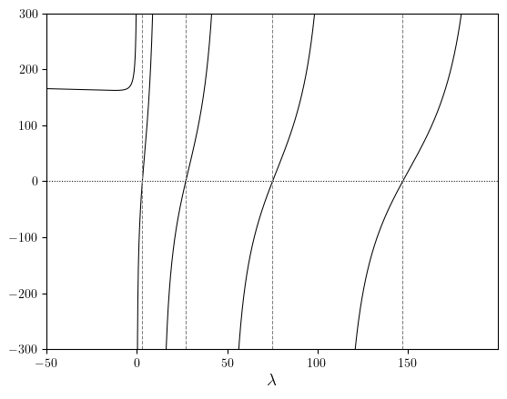
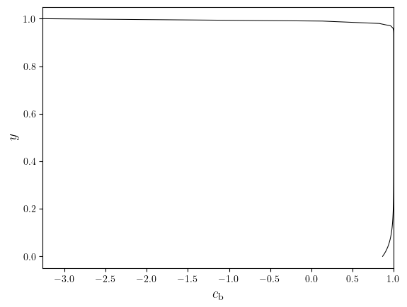
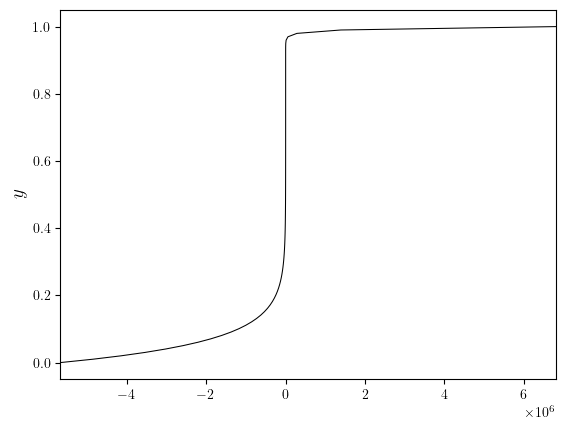

Exact early-time model#
from ipynb_boilerplate import *
from crocodil.theory.system_a.early import EarlyTimeSimilarityModel
PARAM_KEYS = ('Ra', 'Da')
PARAMS_FIXED = SYSTEM_A_REFERENCE.remove(*PARAM_KEYS)
simulations_batch = GridSimulationFromNPZ.dict_from_dir_paths(
PARAM_KEYS,
SIM_DIR_PATHS,
('c', 's'),
('f', 'mD', 'mC', 'uRMS'),
PARAMS_FIXED,
lazy=True,
sorting=lambda d: dict(sorted(d.items(), reverse=False)),
)
save_fig = partial(
save_figure,
dir_path=DIR_FIGS,
prefix='EarlyExact',
pickle=True,
file_ext=('svg', 'png'),
)
import numpy as np
from lucifex.plt import plot_line
from crocodil.dns.system_a import SYSTEM_A_REFERENCE
from crocodil.theory.system_a.early import EarlyTimeExactModel, EarlyTimeExactFormulae
X = 1
Ra, Da, zeta0, sr, cr, aspect = SYSTEM_A_REFERENCE['Ra', 'Da', 'zeta0', 'sr', 'cr', 'aspect']
Lmbda = EarlyTimeExactFormulae.Lmbda(Ra, Da, sr)
lmbda_axis = np.arange(-50, 200, 0.01)
lmbda_curve = np.array(
[EarlyTimeExactFormulae.eigenvalue_characteristic(i, Lmbda, zeta0) for i in lmbda_axis]
)
lmbda_curve[np.abs(lmbda_curve) > 1e3] = np.nan
eigen_guesses = range(1, int(max(lmbda_axis)), 5)
eigenvalues = EarlyTimeExactFormulae.eigenvalues(
Lmbda, zeta0, eigen_guesses,
)
fig, ax = plot_line(
(lmbda_axis, lmbda_curve),
x_label='$\lambda$',
)
y_lims = (-300, 300)
ax.set_ylim(*y_lims)
ax.hlines(0, min(lmbda_axis), max(lmbda_axis), linestyles='dotted', colors='black', linewidths=0.75)
ax.vlines(eigenvalues, *y_lims, linestyles='dashed', colors='grey', linewidths=0.75)
<matplotlib.collections.LineCollection at 0x14c3da4a0>

t = np.linspace(1e-6, 120.0, 100)
y = np.linspace(0, X, 100)
exact_model = EarlyTimeExactModel(t, y, Ra, Da, zeta0, sr, cr, eigen_guesses)
# slc = slice(0, None, 5)
# plot_line(
# [(exact_model.y, i) for i in exact_model.c[slc]],
# cyc='jet',
# legend_title='$t$',
# legend_labels=(min(exact_model.t), max(exact_model.t)),
# flip=True,
# )
plot_line(
(exact_model.y, exact_model.c(10.0)),
flip=True,
x_label='$c_{\mathrm{b}}$',
y_label='$y$',
)
(<Figure size 640x480 with 1 Axes>,
<Axes: xlabel='$c_{\\mathrm{b}}$', ylabel='$y$'>)

exact_model.coefficients
[2.714852034154549e-07,
2.7190571821617454e-07,
2.597728155289433e-07,
6.442076238715982e-08,
-2.8606734164605247e-07]
The Kernel crashed while executing code in the current cell or a previous cell.
Please review the code in the cell(s) to identify a possible cause of the failure.
Click <a href='https://aka.ms/vscodeJupyterKernelCrash'>here</a> for more info.
View Jupyter <a href='command:jupyter.viewOutput'>log</a> for further details.
Ln = eigenvalues[-1]
plot_line(
(exact_model.y, [EarlyTimeExactFormulae.Yn(i, Ln, Lmbda, zeta0) for i in exact_model.y]),
flip=True,
y_label='$y$',
)
(<Figure size 640x480 with 1 Axes>, <Axes: ylabel='$y$'>)

exact_model.eigenvalues
array([ 3.00380779, 27.03420964, 75.09469037, 147.18460192,
243.30296698])